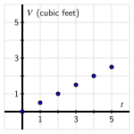
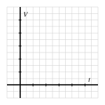
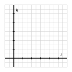
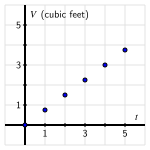
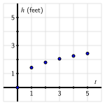

If we have two quantities that are changing in tandem, how can we connect the quantities and understand how change in one affects the other?
When the amount of water in a tank is changing, what behaviors can we observe?
Mathematics is the art of making sense of patterns. One way that patterns arise is when two quantities are changing in tandem. In this setting, we may make sense of the situation by expressing the relationship between the changing quantities through words, through images, through data, or through a formula.
Exploration1.1.1.
Suppose that a rectangular aquarium is being filled with water. The tank is \(4\) feet long by \(2\) feet wide by \(3\) feet high, and the hose that is filling the tank is delivering water at a rate of \(0.5\) cubic feet per minute.
Figure1.1.1.The empty aquarium.
Figure1.1.2.The aquarium, partially filled.
What are some different quantities that are changing in this scenario?
After \(1\) minute has elapsed, how much water is in the tank? At this moment, how deep is the water?
How much water is in the tank and how deep is the water after \(2\) minutes? After \(3\) minutes?
How long will it take for the tank to be completely full? Why?
Subsection1.1.1Using Graphs to Represent Relationships
In Preview Activity 1.1.1, we saw how several changing quantities were related in the setting of an aquarium filling with water: time, the depth of the water, and the total amount of water in the tank are all changing, and any pair of these quantities changes in related ways. One way that we can make sense of the situation is to record some data in a table. For instance, observing that the tank is filling at a rate of \(0.5\) cubic feet per minute, this tells us that after \(1\) minute there will be \(0.5\) cubic feet of water in the tank, and after \(2\) minutes there will be \(1\) cubic foot of water in the tank, and so on. If we let \(t\) denote the time in minutes and \(V\) the amount of water in the tank at time \(t\text{,}\) we can represent the relationship between these quantities through Table 1.1.3.
\(t\)
\(V\)
\(0\)
\(0.0\)
\(1\)
\(0.5\)
\(2\)
\(1.0\)
\(3\)
\(1.5\)
\(4\)
\(2.0\)
\(5\)
\(2.5\)
Table1.1.3.Data for how the volume of water in the tank changes with time.
Figure1.1.4.A visual representation of the data in Table 1.1.3.
We can also represent this data in a graph by plotting ordered pairs \((t,V)\) on a system of coordinate axes, where \(t\) represents the horizontal distance of the point from the origin, \((0,0)\text{,}\) and \(V\) represents the vertical distance from \((0,0)\text{.}\) The visual representation of the table of values from Table 1.1.3 is seen in the graph in Figure 1.1.4.
Sometimes it is possible to use variables and one or more equations to connect quantities that are changing in tandem. In the aquarium example from the preview activity, we can observe that the volume, \(V\text{,}\) of a rectangular box that has length \(l\text{,}\) width \(w\text{,}\) and height \(h\) is given by
\begin{equation*}
V = l \cdot w \cdot h\text{,}
\end{equation*}
and thus, since the water in the tank will always have length \(l = 4\) feet and width \(w = 2\) feet, the volume of water in the tank is directly related to the depth of water in the tank by the equation
\begin{equation*}
V = 4 \cdot 2 \cdot h = 8h\text{.}
\end{equation*}
Depending on which variable we solve for, we can either see how \(V\) depends on \(h\) through the equation \(V = 8h\text{,}\) or how \(h\) depends on \(V\) via the equation \(h = \frac{1}{8}V\text{.}\) From either perspective, we observe that as depth or volume increases, so must volume or depth correspondingly increase.
Activity1.1.2.
Consider a tank in the shape of an inverted circular cone (point down) where the tank’s radius is \(2\) feet and its depth is \(4\) feet. Suppose that the tank is being filled with water that is entering at a constant rate of \(0.75\) cubic feet per minute.
Sketch a labeled picture of the tank, including a snapshot of there being water in the tank prior to the tank being completely full.
What are some quantities that are changing in this scenario? What are some quantities that are not changing?
Fill in the following table of values to determine how much water, \(V\text{,}\) is in the tank at a given time in minutes, \(t\text{,}\) and thus generate a graph of the relationship between volume and time by plotting the data on the provided axes.
\(t\)
\(V\)
\(0\)
\(\)
\(1\)
\(\)
\(2\)
\(\)
\(3\)
\(\)
\(4\)
\(\)
\(5\)
\(\)
Table1.1.5.Table to record data on volume and time in the conical tank.
Figure1.1.6.How volume and time change in tandem in the conical tank.
Finally, think about how the height, \(h\text{,}\) of the water changes in tandem with time. Without attempting to determine specific values of \(h\) at particular values of \(t\text{,}\) how would you expect the data for the relationship between \(h\) and \(t\) to appear? Use the provided axes to sketch at least two possibilities; write at least one sentence to explain how you think the graph should appear.

Subsection1.1.2Using Algebra to Add Perspective
One of the ways that we make sense of mathematical ideas is to view them from multiple perspectives. We may use different means to establish different points of view: words, numerical data, graphs, or symbols. In addition, sometimes by changing our perspective within a particular approach we gain deeper insight.
If we consider the conical tank discussed in Activity 1.1.2, as seen in Figure 1.1.7 and Figure 1.1.8, we can use algebra to better understand some of the relationships among changing quantities. The volume of a cone with radius \(r\) and height \(h\) is given by the formula
\begin{equation*}
V = \frac{1}{3}\pi r^2 h\text{.}
\end{equation*}
Note that at any time while the tank is being filled, \(r\) (the radius of the surface of the water), \(h\) (the depth of the water), and \(V\) (the volume of the water) are all changing; moreover, all are connected to one another. Because of the constraints of the tank itself (with radius \(2\) feet and depth \(4\) feet), it follows that as the radius and height of the water change, they always do so in the proportion
Solving this last equation for \(r\text{,}\) we see that \(r = \frac{1}{2}h\text{;}\) substituting this most recent result in the equation for volume, it follows that
\begin{equation*}
V = \frac{1}{3}\pi \left( \frac{1}{2}h \right)^2 h = \frac{\pi}{12} h^3\text{.}
\end{equation*}
This most recent equation helps us understand how \(V\) and \(h\) change in tandem. We know from our earlier work that the volume of water in the tank increases at a constant rate of \(0.75\) cubic feet per minute. This leads to the data shown in Table 1.1.9.
Table1.1.9.How time and volume change in tandem in a conical tank.
\(t\)
\(0\)
\(1\)
\(2\)
\(3\)
\(4\)
\(5\)
\(V\)
\(0.0\)
\(0.75\)
\(1.5\)
\(2.25\)
\(3.0\)
\(3.75\)
With the equation \(V = \frac{\pi}{12} h^3\text{,}\) we can now also see how the height of the water changes in tandem with time. Solving the equation for \(h\text{,}\) note that \(h^3 = \frac{12}{\pi} V\text{,}\) and therefore
\begin{equation}
h = \sqrt[3]{\frac{12}{\pi} V}\text{.}\tag{1.1.1}
\end{equation}
Thus, when \(V = 0.75\text{,}\) it follows that \(h = \sqrt[3]{\frac{12}{\pi} 0.75} \approx 1.42\text{.}\) Executing similar computations with the other values of \(V\) in Table 1.1.9, we get the following updated data that now includes \(h\text{.}\)
Table1.1.10.How time, volume, and height change in concert in a conical tank.
\(t\)
\(0\)
\(1\)
\(2\)
\(3\)
\(4\)
\(5\)
\(V\)
\(0.0\)
\(0.75\)
\(1.5\)
\(2.25\)
\(3.0\)
\(3.75\)
\(h\)
\(0.0\)
\(1.42\)
\(1.79\)
\(2.05\)
\(2.25\)
\(2.43\)
Plotting this data on two different sets of axes, we see the different ways that \(V\) and \(h\) change with \(t\text{.}\) Whereas volume increases at a constant rate, as seen by the straight line appearance of the points in Figure 1.1.11, we observe that the water’s height increases in a way that it rises more slowly as time goes on, as shown by the way the curve the points lie on in Figure 1.1.12 “bends down” as time passes.
Figure1.1.11.Plotting \(V\) versus \(t\text{.}\)
Figure1.1.12.Plotting \(h\) versus \(t\text{.}\)
These different behaviors make sense because of the shape of the tank. Since at first there is less volume relative to depth near the cone’s point, as water flows in at a constant rate, the water’s height will rise quickly. But as time goes on and more water is added at the same rate, there is more space for the water to fill in order to make the water level rise, and thus the water’s height rises more and more slowly as time passes.
Subsection1.1.3Conclusions
When two related quantities are changing in tandem, we can better understand how change in one affects the other by using data, graphs, words, or algebraic symbols to express the relationship between them. See, for instance, Table 1.1.9, Figure 1.1.11, Figure 1.1.12, and Equation (1.1.1) that together help explain how the height and volume of water in a conical tank change in tandem as time changes.
When the amount of water in a tank is changing, we can observe other quantities that change, depending on the shape of the tank. For instance, if the tank is conical, we can consider both the changing height of the water and the changing radius of the surface of the water. In addition, whenever we think about a quantity that is changing as time passes, we note that time itself is changing.